原文连接:https://www.cnblogs.com/suhaha/p/11794786.html
1.前言
在项目中编写Sysem.out.prinltn()的时候，是输出到控制台的，当项目发布到tomcat之后，是没有控制台的，不过可以在命令行界面还能看见，但是不容易观察一些输出结果。log4j是由apache推出的一个开源免费的日志处理的类库，不仅仅可以把内容输出到控制台，还能把内容输出到文件中。便于观察结果。
2.使用步骤
- 导入log4j的jar包
- 在src下，新建log4j.properties（路径和名称都是固定的，不允许改变。也就是说，src下的log4j.properties文件是log4j默认加载的文件路径！）
3.log4j配置文件
- log4j输出级别：Fatal 致命错误 --> error 错误 --> warn 警告--> info 信息 --> debug调试信息
在log4j.properties文件的第一行中控制输出级别
### set log levels ###
log4j.rootCategory=INFO, CONSOLE上面的配置中，只有INFO及以上的日志才会打印出来，而debug则不会。info后面还有个console，表示将会打印到console控制台。如果还想输入到控制文件，则配置应该是
log4j.rootCategory=INFO, CONSOLE, LOGFILE 在配置文件的第一行控制输出目的地
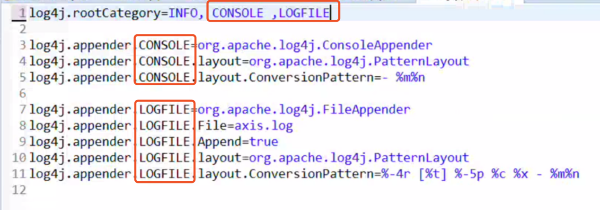
这么写表示控制台和文件都输出
4.MyBatis与log4j
mybatis全局配置文件中是通过
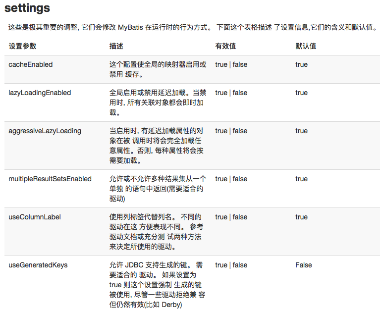
其中最重要的一项配置是如下图
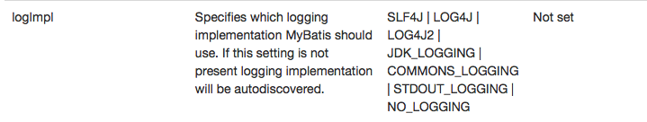
即配置mybatis使用log4j日志！！
下面演示如何在mybatis.xml中开启log4j：
- 必须保证有log4j的jar包
- 在src目录下必须有log4j.properties配置文件
在mybatis.xml文件中做如下配置：
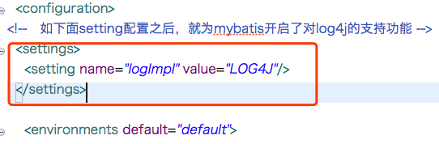
注意settings的配置位置是在
在配置完之后，再配置上log4j.properties配置文件，并将文件输出等级设置为DEBUG，如下：
log4j.rootCategory=DEBUG, CONSOLE, LOGFILE
log4j.appender.CONSOLE=org.apache.log4j.ConsoleAppender
log4j.appender.CONSOLE.layout=org.apache.log4j.PatternLayout
log4j.appender.CONSOLE.layout.ConversionPattern=%C %d{yyyy-MM-dd HH:mm:ss} %m %n
log4j.appender.LOGFILE=org.apache.log4j.FileAppender
log4j.appender.LOGFILE.File=log.log
log4j.appender.LOGFILE.Append=true
log4j.appender.LOGFILE.layout=org.apache.log4j.PatternLayout
log4j.appender.LOGFILE.layout.ConversionPattern=%C %d{yyyy-MM-dd HH:mm:ss} %m %n 如此，当使用mybatis执行sql语句，将会输出如下的调试日志：
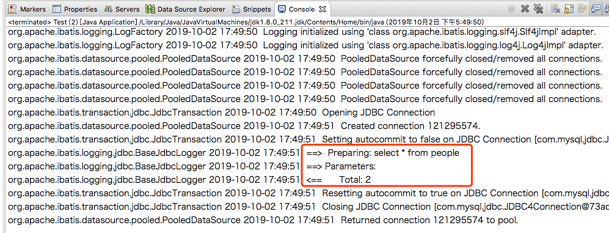
可以看到，上面输出的调试信息中，最重要的是红框中的3句话。
因此，下面需要再对log4j.properties配置文件做相应配置，使得最后只输出这3行。 此时需要在log4j.properties配合文件做两件事情 ：
- 将log4j.rootCategory的日志级别设置的比DEBUG高，如下：
log4j.rootCategory=ERROR, CONSOLE, LOGFILE- 在log4j.rootCategory制定mapper.xml的日志级别
Log4j中可以输出指定内容的日志（控制某个局部内容的日志级别）.这句话的意思是，比如当我们只想控制PeopleMapper.xml中如下sql的日志输出
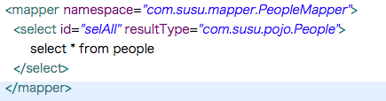
那么此时可以在log4j.properties配置文件中，做如下配置：
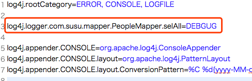
如此，也能控制当执行到PeopleMapper.xml中的selAll这个sql时，输出如下的DEBUG信息。
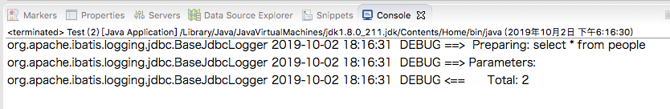
但是这种配置方法存在一个弊端，就是使用范围太窄。假如说PeopleMapper.xml配置文件还有其他sql查询，如下：
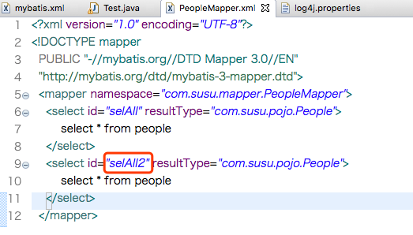
那么此时还是用上面的log4j.properties配置文件就不合适了，也需要做相应的修改才行：

可见，log4j.properties添加了一行。
但是，如果PeopleMapper.xml文件中的sql非常多，那么此时log4j.properties中需要添加的内容也同样非常多，因此像上面这种 方法级别 的配置是不合理的。这个时候，可以只对log4j.properties修改到 类级别 ：

如此，无论是调用PeopleMapper.xml中selAll还是selAll2的sql，就都可以打印出他们的debug信息了。
但是，在实际项目中，肯定还会有其他的mapper.xml配置文件。比如FlowerMapper.xml。
此时如果log4j.properties依然保持上述配置不变，那么当执行FlowerMapper.xml的sql时，就无法打出它的debug信息了。因此，可以将log4j.properties配置文件设置成包级别的，如下：
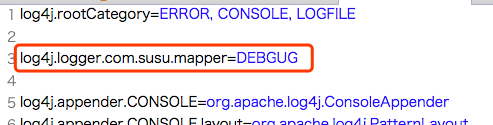
如此，凡是com.susu.mapper包下的mapper.xml文件中的sql，当执行时都会打印出如下的debug信息：
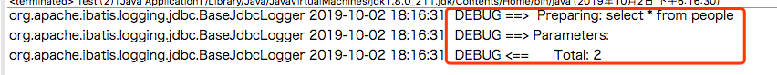
5.总结
- 命名级别（包级别）：
namespace属性中除了最后一个类名以外的部分。例如namespace=”com.susu.mapper.PeopleMapper”，那么包级别则是com.susu.mapper，此时就需要在log4j.properties文件中：
- 先在总体级别，设置日志级别为ERROR（比debug高），不输出无用信息
- 再设置某个制定位置级别为DEBUG
- 类级别：就是mapper.xml中namespace属性的值
- 方法级别：mapper.xml中namespace属性的值 + 标签id的属性值